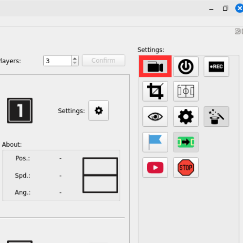
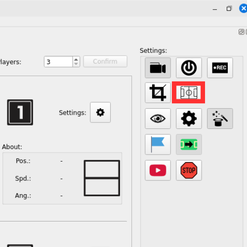
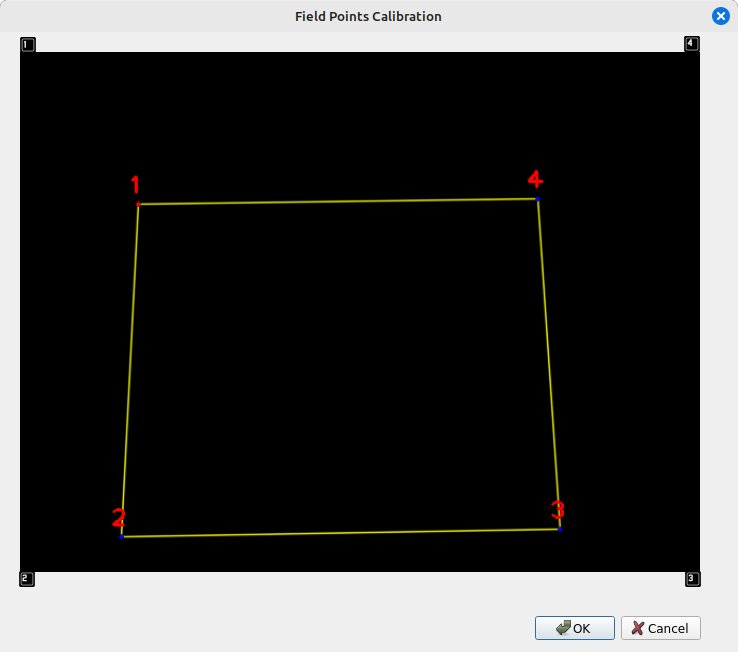

2. Setting Up the Field
1. Start Titans-Vision
Open the terminal and run the following command:
./docker_run [Camera ID]
🔍 Note: The Camera ID can be found at
/dev/video {id}. For example:/dev/video 0→ ID =0❗ If no ID is specified, the system will run without a connected camera.

2. Access the Graphical Interface
Once the system starts, the main graphical interface will appear. Click the Start Capture Button to begin capturing images from the field.

3. Access the Calibration Interface
Then click the Field Points Calibration Button to begin setting up the field’s position in the image.

4. Adjusting Field Points
After clicking to configure the field, a new window will open showing the image captured by the camera, with four overlaid points — one for each corner of the field.

🔹 Near each point, you will see an associated keyboard key (1, 2, 3, 4). These keys represent the four corners of the field.
📍 How to adjust the points:
- Hold down the
Altkey on your keyboard. - While holding
Alt, press the number key corresponding to the point you want to move. - Example: If the bottom point is marked with
2, pressAlt + 2. - Now, use the
W,A,S,Dkeys to move the point in the image: W→ upA→ leftS→ downD→ right
📝 Tip: Adjust the points until each one is exactly positioned at the real four corners of the field as projected by the camera.
5. Save Configuration
After adjusting all four points:
- Click the Ok button to save the point positions.
✅ The system is now calibrated with the correct corners of the field.